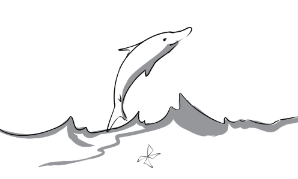
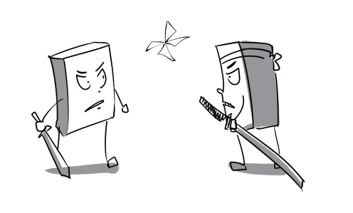
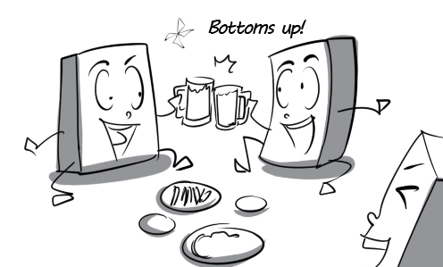

1.
advisory: There is a tornado advisory on TV right now.
2.
aesthetic: The Vietnamese Ao Dai nowadays has highly aesthetic value.
3.
aggregate: The three companies have an aggregate turnover of $6 million.
4.
allocation: Allocations are given to employees for work-related purposes.
5.
amass: He has amass a huge fortune from diamond mining.
6.
animator: The animator is drawing a cartoon scene with a pencil.
7.
appall: Everybody was appalled at the number of people killed by the earthquake in Japan.
8.
apprentice: Thomas exposed the apprentice to the various functions in this company.
9.
aquatic: Dolphin is a very intelligent aquatic animal.

10.
aromatic: The flower is strongly aromatic, which is why it can attract insects.
11.
arrogant: I found my class monitor very arrogant and rude.
12.
biped: Human is the most intelligent biped in the world.
13.
bloodstream: After a drug is absorbed into the bloodstream, it rapidly circulates through the body.
14.
brace oneself: Our troops are bracing themselves for a long battle.

15.
breakage: His house was full of breakages after an earthquake.
16.
breeding: His family's business is chicken-breeding.
17.
colonize: India was colonized by the British in the eighteenth century.
18.
calamity: The province has been placed under a state of calamity due to floods.

19.
caravan: The caravan are ready to travel through the dangerous desert.
20.
cargo: The ship is carrying a cargo of rice from Vietnam to the US.
21.
cavalry: My brother was enlisted into the US Cavalry last year.
22.
cavern: Son Doong is one of the world's largest subterranean caverns.
23.
champion: They have always championed the cause of peace.
24.
chivalry: Women really love William's sense of chivalry and charm.
25.
chronicle: This book is a chronicle of the Roman emperors.
26.
cipher: To his colleagues he was a mere cipher, which is why they never let him join any discussion.

27.
civilian: Many civilians were killed in the bombardment.
28.
controversial: The existence of mermaids is a highly controversial topic.
29.
clash: David clashed with his leader on the issue.
30.
comparatively: The train was comparatively empty although it was the tourist season.

31.
constitution: The Constitution of the United States was adopted on September 17, 1787.
32.
cultivate: The farmers cultivate mainly radishes and carrots here.
33.
definitive: After a long discussion, President Obama made the definitive decision.
34.
delectable: The delectable cheesecake made my mouth water.
35.
demographics: The demographics shows that older people account for 38% of this country's population.
36.
desolate: This desert is desolate because of its extreme water shortage.
37.
detergent: My mother is pouring detergent into the washing machine.
38.
deteriorate: His health deteriorated rapidly after he injected himself with heroin.
39.
diarrhea: Peter suffered from diarrhea because he drank some sour milk.
40.
dictate: The manager dictates what the singer should drink.
41.
differential: There are differential treatments of customers based on social class in this restaurant.
42.
digest: David can digest all kinds of food very easily.

43.
disavow: The famous actor disavowed the rumor that he had a new girlfriend.
44.
disorder: It's hard for Tommy to understand the lesson because he has a learning disorder.
45.
enactment: The enactment of the Endangered Species Act will help save rare animals.

46.
encroach: Weeds encroached on my garden because I didn't tend it for a long time.
47.
enmity: The enmity between these two men is obvious.
48.
ensemble: The New York ensemble performed a wonderful show tonight.
49.
ensue: The uprising ensued after the boss beat a worker to death.
50.
entirety: I read this long novel in its entirety.
51.
episode: The director never forgets that terrible episode of his career when he was just a petty employee.
52.
eye-catching: The eye-catching cell phone attracted a lot of attention.
53.
ferment: My mother fermented small-sized cucumbers in this glass jar.
54.
fizzle out: This band was very promising, but it fizzled out when their lead singer quit.

55.
foe: They used to be close but they are now bitter foes.

56.
forecaster: The weather forecaster says that there will be heavy rain tomorrow.
57.
fugitive: The fugitive hid from the police in a bush.
58.
function: There were hundreds of people attending the charity function last night.
59.
funnel: I used a funnel to pour water into the small bottle.
60.
fuse: My brother is trying to fuse two metal pieces together.
61.
gargantuan: The Great Sphinx of Giza is a gargantuan limestone statue.
62.
get-up-and-go: The new secretary's got more get-up-and-go than anyone, which makes the director very pleased.
63.
gush: Water gushed out of the gun when he pulled the trigger.
64.
heartland: Hue is the cultural heartland of Vietnam in art, music and religion.
65.
hype: Don't believe all the hype - this dairy product isn't that effective.
66.
identification: The identification of the murderer became very easy thanks to the witness.
67.
in conjunction with: I am working in conjunction with Dr. Green on this research.

68.
incessantly: Peter talked about his new girlfriend incessantly, which made us very annoyed.
69.
incumbent: Mr. Thomas is the present incumbent of the CEO post.
70.
innards: This anatomical model will help us learn about the innards very easily.
71.
insurrection: The insurrection against Muammar Gaddafi has its origin in Benghazi.
72.
internship: My brother has been doing his internship in this company for 3 months.
73.
launder: The CEO laundered the funds through Swiss bank accounts.
74.
lean on: Mary leans heavily on her husband.

75.
leather: This expensive purse is made of crocodile leather.

76.
lightning: The man was struck by lightning and killed.
77.
lineage: David is very proud of his royal lineage.
78.
literature: War and Peace is one of the greatest works of literature in the world.
79.
lofty: I have to raise my head to look at the lofty building.
80.
makeshift: My uncle used a rock as a makeshift hammer.
81.
maneuver: The cunning athlete used shameful maneuvers to win the competition.
82.
map out: The director has next year's sales strategy clearly mapped out.

83.
merrymaking: The merrymaking went on until the morning came.

84.
metallic: This travel mug is made of metallic materials.
85.
nobility: The late president was respected for his nobility.
86.
occupy: The whole city has been occupied by the foreign invaders.

87.
organic: Organic farming does not use chemicals to control pests and diseases.
88.
outpost: My brother was stationed at a remote military outpost last year.
89.
overriding: Mary's overriding concern is to lose 10 pounds as soon as possible.
90.
payload: The payload of this aircraft is 100 tons.
91.
phony: The young girl cried phony tears when her old husband died.
92.
pier: There is a luxury yacht anchored at the pier.
93.
pigment: They will mix these pigments into oil to make different types of dyes.
94.
poetry: Poetry is Peter's biggest passion. He always write love poems for his girlfriend.
95.
prairie: Native Americans used to live on this vast prairie.
96.
random: The surveyor grabs a random pedestrian and asks him a few questions.
97.
rubble: There were large pieces of rubble falling down from the ceiling.
98.
slab: Tommy is eating a big slab of chocolate.
99.
threshold: The temperature threshold of water boiling is 100°C.
100.
tissue: The biology teacher is delivering a lecture on plant tissue.